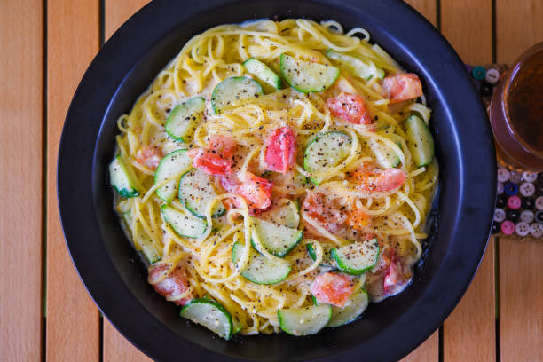

The Pasta Recipe

INGREDIENTS:
- 2 cups flour
- 3 large eggs, at room temperature
- 2 tablespoons olive oil
- 1 teaspoon salt
- 2 tablespoons water, or as needed
STEPS:
- Gather all ingredients.
- Mix flour, eggs, olive oil, and salt in a bowl until combined. Add water, 1 teaspoon at a time, to flour mixture until a smooth, thick dough forms.
- Turn dough out onto a lightly floured work surface and knead for 10 minutes. Let dough rest for 5 to 10 minutes.
- Divide dough into 8 balls; use a pasta machine to roll and cut dough into desired pasta shape.